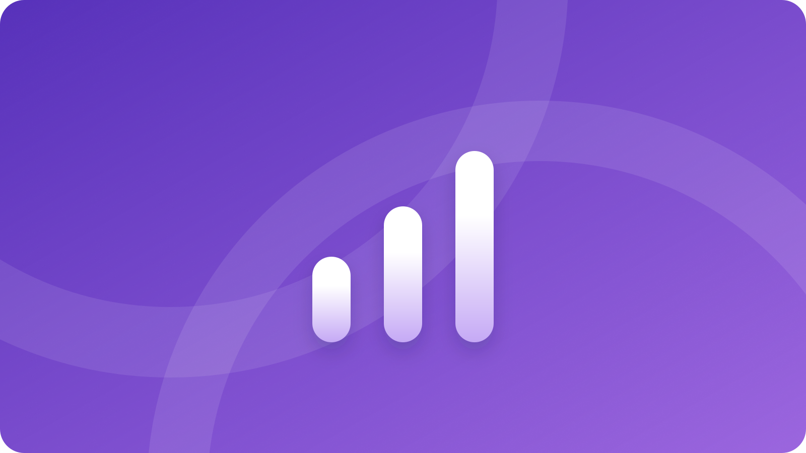

AI顧問の費用はいくら？月額だけで決めない総額の見方
AI顧問の費用を比べるとき、月額の数字だけでは判断できません。初期費用、月額固定費、ツールやAPIなどの従量費、追加作業費、社内の確認・教育・運用工数を同じ表に入れ、契約期間と成果物までそろえて比較します。
公開日: 2026年7月30日 | AI顧問室 編集部
- 初期費用・月額・従量費・追加作業・社内確認工数を年間総額へ入れる
- 公開価格は市場平均と混同せず、支援範囲と契約期間の前提を確認する
- 月額が自社の対象業務と成果物に合わない場合は、研修や単発支援も比較する

先に結論：AI顧問の費用は「総額」と「任せる範囲」で決まる
見積もりを受け取ったら、次の式へ分解してください。
年間総費用 = 初期費用 + (月額固定費 × 契約月数) + 従量費 + 追加作業費 + 社内確認工数
大切なのは、数字を埋めることより空欄を残さないことです。月額に何が含まれるか、どこからが追加か、誰が毎週確認するか、契約を終了したときにデータと手順が残るかを確認します。AI顧問の料金比較は、安い順ではなく、対象業務の完了条件を満たす総額の順に行うのが安全です。
公開ページの料金帯は「相場」ではなく前提付きの例として読む
検索結果には、AI顧問、AIコンサルティング、導入支援をまとめた料金解説と、各社の料金ページが並びます。支援範囲が相談だけなのか、実装・研修・継続改善まで含むのかで、価格の意味が変わるためです。
37Designの料金解説は、料金帯、隠れコスト、年額試算、ROIを分けて整理しています。Dr.Wallet BPOの解説は、相談、導入支援、戦略、実装という支援タイプごとに初期費用と月額を分けています。これらは公開ページの整理例であり、日本のAI顧問全体の平均価格を示す統計ではありません。数字を引用するときは、対象範囲、契約期間、含まれる成果物を必ず一緒に記録してください。clearAIのFAQのように、PoCと本番導入で期間・費用の前提が変わるサービスもあります。
見積もりを五つの費用に分解する
| 費用 | 含まれる作業の例 | 契約前に聞くこと |
|---|---|---|
| 初期費用 | 現状診断、業務選定、要件整理、初期設定 | 初月の成果物と、月額との重複は何か |
| 月額固定費 | 定例会、チャット相談、改善提案、運用レビュー | 回数、対応時間、担当者、対象業務の上限は何か |
| 従量費 | AIツール、API、外部サービス、データ保管 | 誰が契約し、上限通知と停止条件を持つか |
| 追加作業費 | 個別連携、改修、出張、データ整備 | 追加になる条件と、事前承認の方法は何か |
| 社内工数 | データ準備、出力確認、教育、例外対応 | 毎週誰が何分確認し、代替担当は誰か |
「実装込み」と書いてあっても、対象システム、データ整形、テスト、権限設定、保守まで含むとは限りません。見積書の作業名を、入力、処理、出力、承認、保存、障害時の停止に分けて書き直すと、追加費用と社内工数を見つけやすくなります。
支援タイプ別に、費用の目的を合わせる
| 支援タイプ | 向く状態 | 主な成果物 | 費用の注意点 |
|---|---|---|---|
| AIツール | 担当者が設定・運用できる | アカウント、テンプレート | 設定・教育・運用時間が別に必要 |
| AI研修 | 社員の基礎理解をそろえたい | 教材、演習、社内ルール | 研修後の質問と個別実装は別範囲になりやすい |
| スポット相談 | 優先順位と試行範囲を決めたい | 診断、ロードマップ | 実装と定着を誰が担当するか確認 |
| 個別開発 | 対象業務と要件が固まっている | 試作、本番システム、手順書 | 保守、データ更新、追加改修を分ける |
| AI顧問 | 複数業務を順に改善したい | 優先順位、実装、研修、改善記録 | 月ごとの成果物、稼働範囲、終了条件を明記 |
全社員へ使い方を広げることが目的なら研修、見積工程など一つの業務を動かすことが目的なら個別開発、業務選定から実装・定着まで毎月進めたいならAI顧問が候補です。候補業務が一つで、毎月の支援内容を説明できないなら、継続契約が過剰な可能性もあります。
AI顧問室の料金をどう読むか
AI顧問室の公式料金ページでは、顧問契約を月50万円から、税別、最低契約期間3ヶ月と案内しています。訪問回数、実装、社員研修などの支援範囲によって費用が変わるため、公開価格は「相談だけの定額」ではなく、診断後に範囲を設計するための基準として読みます。出典は公式の料金ページです。
この料金が向くのは、経営者がAI活用の優先順位を決めたい、複数業務を順に試したい、実装後に社員へ引き継ぎたい会社です。一方、導入ツールと担当者が決まっていて自社だけで運用できる会社、一業務の要件が固まっていて納品条件が明確な会社には、研修や単発の導入支援の方が合うことがあります。自社に合わない条件を先に確認することも、費用判断の一部です。
費用対効果と契約前の確認は、削減時間ではなく意思決定まで測る
AI導入の費用対効果を出すときは、削減できそうな時間だけを売上へ置き換えません。作業時間、確認時間、修正件数、停止回数、担当者の引き継ぎ時間を分けて記録します。まずはAI導入の費用対効果ガイドで、標準ケース、保守ケース、停止ケースを別々に試算してください。
次に、対象業務の完了条件を一文で決めます。たとえば「問い合わせを分類し、回答案を作り、担当者が根拠を確認してから送信し、履歴を保存する」のように、AIの出力だけでなく人の承認と記録まで含めます。月額が高くても確認や引き継ぎが減る場合があり、月額が低くても社内工数と追加改修が膨らむ場合があります。
- 最初の一業務と、初月に残る成果物は何か。
- 月額に含まれない作業、ツール、API、保守は何か。
- 追加作業になる条件と、着手前の承認方法は何か。
- 顧客への送信、契約・請求の確定、権限変更を誰が承認するか。
- 入力データの保存先、アクセス権、削除方法は何か。
- 担当者が休んだとき、社内で止められるか、代替担当は誰か。
- 契約を終了したとき、手順書、設定、ログ、データを何の形式で返すか。
- 効果が出ない場合のレビュー日、縮小条件、停止条件は何か。
回答が口頭だけなら、提案書の同じ欄へ転記してもらいます。未回答を推測で埋めず、金額、担当、期限、承認点、終了条件を「未定」として残す方が、契約後の追加請求や期待違いを防げます。比較の軸をさらに整理したい場合は、AI顧問を比較する5つの基準も参照してください。
よくある質問
AI顧問の費用は月額だけ見ればよいですか？
いいえ。初期費用、月額固定費、従量費、追加作業費、社内確認工数を合計し、契約期間と成果物をそろえて比べます。
AI顧問とAIコンサルタントの料金は違いますか？
呼称だけでは判断できません。助言、研修、実装、保守、継続改善のどこまで含むかを確認し、同じ成果物の条件で比較します。
AI顧問室の月50万円は高いですか？
高い・安いを先に決めず、月額に含まれる支援範囲、契約期間、社内工数、実装・研修・改善の成果物を確認します。自社に毎月任せる業務が説明できない場合は、別の支援形態も比較してください。
見積もりの前に相談できますか？
はい。候補業務、期待する効果、人の確認点を整理するために、AI顧問室の無料相談を利用できます。相談時点で契約を決める必要はありません。
参照ページ
- 37Design「AI顧問の費用比較」（公開ページの料金整理例、2026-07-30取得）
- Dr.Wallet BPO「AI顧問の費用」（支援範囲別の整理例、2026-07-30取得）
- clearAI「AIコンサルティング」（PoC・本番導入とスコープ依存のFAQ、2026-07-30取得）
- AI顧問室 公式料金ページ（自社一次情報、2026-07-30取得）